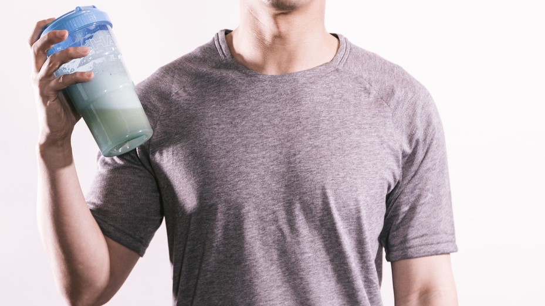

エンジニアでもプロテインが飲みたい！
更新：2020/05/25
はじめに
昨今の筋トレブームや、某2019年夏アニメでも話題になっていた筋トレですが、筋トレにはプロテインが必ずと言っていいほど結びついてきます。
そこで、情報系専門学校に通っている私ですが、趣味で筋トレもしているので、簡単にプロテインについてまとめてみました。
そこで、情報系専門学校に通っている私ですが、趣味で筋トレもしているので、簡単にプロテインについてまとめてみました。
そもそもプロテインって何？

まずプロテインという言葉は、日本語で言うタンパク質の事です。プロテインと聞くと何かおぞましい感じがしますが、タンパク質と聞くと一気に優しい感じになりませんか？
また市販の所謂プロテインには、タンパク質以外にもビタミンB1やビタミンC アミノ酸など 商品によって違いはあれど様々な栄養素が含まれています。
ですので、タンパク質以外にも必要な栄養素だけを効率的に 無駄無く摂取できます。
なぜプロテインを摂取するのか？
プロテインを摂取する目的として メジャーなのは筋肉の増強ですよね。
ですが、プロテインを飲むだけで、筋肉が肥大化するわけではありません。
しっかりと、トレーニングをすることが大事になってきます
また、人間の身体はタンパク質で構成されており、タンパク質が不足すると、ケガや体調不良などの原因となります。
そのため普段トレーニングをしない人でも、プロテインを摂取することは、なんら悪いことではないのです。
人間の身体には一日にタンパク質 男性なら 自分の体重×1g必要とされており、体重60kgの成人男性なら60gとなります
この量を摂取しようとすると、かなりの量の肉だったり卵などの タンパク質が豊富といわれている食品を食べなければいけません。
ですが、それだけの量の肉などを食べると、同時に脂肪などの余計な栄養素も摂取してしまうことになります。
そこでプロテインの登場です
脂肪の量が多くなりすぎない程度に肉を食べ、そこにプロテインを摂取することで もちろん脂肪の量は増えすぎませんし、プラスして肉などでは補いづらい栄養素をプロテインから摂取することができます。
また、プロテインのブランドにもよりますが、アミノ酸等の普段の食事では摂取しにくい栄養素も摂取できます！
ですので、筋トレをしていない人でも、プロテインを飲むことはなんら悪いことでは無いのです！
ですが、プロテインを飲むだけで、筋肉が肥大化するわけではありません。
しっかりと、トレーニングをすることが大事になってきます
また、人間の身体はタンパク質で構成されており、タンパク質が不足すると、ケガや体調不良などの原因となります。
そのため普段トレーニングをしない人でも、プロテインを摂取することは、なんら悪いことではないのです。
人間の身体には一日にタンパク質 男性なら 自分の体重×1g必要とされており、体重60kgの成人男性なら60gとなります
この量を摂取しようとすると、かなりの量の肉だったり卵などの タンパク質が豊富といわれている食品を食べなければいけません。
ですが、それだけの量の肉などを食べると、同時に脂肪などの余計な栄養素も摂取してしまうことになります。
そこでプロテインの登場です
脂肪の量が多くなりすぎない程度に肉を食べ、そこにプロテインを摂取することで もちろん脂肪の量は増えすぎませんし、プラスして肉などでは補いづらい栄養素をプロテインから摂取することができます。
また、プロテインのブランドにもよりますが、アミノ酸等の普段の食事では摂取しにくい栄養素も摂取できます！
ですので、筋トレをしていない人でも、プロテインを飲むことはなんら悪いことでは無いのです！
プロテインの種類って？
実はプロテインには、原料基づく種類があります。
主なのは、牛乳を原料として作られるホエイプロテイン
大豆を原料としているソイプロテイン
ホエイプロテインと同じく、牛乳を原材料としているが、
吸収がゆっくりなカゼインプロテインがあります。
これらの違いとしましては、まず水や牛乳への溶けやすさ、また価格帯です
水などへの溶けやすさ、順に ホエイプロテイン<カゼインプロテイン<ソイプロテインと言われています。
今までプロテインを飲んだことのない方は、
価格の点からも無難にソイプロテインやホエイプロテインの物を購入することをおすすめします。
主なのは、牛乳を原料として作られるホエイプロテイン
大豆を原料としているソイプロテイン
ホエイプロテインと同じく、牛乳を原材料としているが、
吸収がゆっくりなカゼインプロテインがあります。
これらの違いとしましては、まず水や牛乳への溶けやすさ、また価格帯です
水などへの溶けやすさ、順に ホエイプロテイン<カゼインプロテイン<ソイプロテインと言われています。
今までプロテインを飲んだことのない方は、
価格の点からも無難にソイプロテインやホエイプロテインの物を購入することをおすすめします。
プロテインのブランドって？
現在市販されているプロテインでメジャーなのはSAVASでしょうか
あとはウィダーから名前を変えたIn ゼリーのプロテインですかね
実際筆者の私は、SAVASとInゼリーのプロテインを飲んでいましたが
その後、その二つではなく、ビーレジェンドに一度乗り換えをし
そして今はHIGH CLEARというブランドのプロテインを飲んでいます。
あとはウィダーから名前を変えたIn ゼリーのプロテインですかね
実際筆者の私は、SAVASとInゼリーのプロテインを飲んでいましたが
その後、その二つではなく、ビーレジェンドに一度乗り換えをし
そして今はHIGH CLEARというブランドのプロテインを飲んでいます。
実際プロテインの味って？
HIGH CLEAR:さっぱりピーチ味 さっぱりアップル味
この写真の4つに+inゼリーのプロテインを加え、これらが私が飲んできたプロテインです。
味については、どれも表記の味+プロテイン独特の風味という感じなのですが
BeLegendのいちご味が一番プロテインの風味を感じにくく、個人的には一番美味しいと感じました。
そして、次にHIGH CLEARの二つという感じでした
私のおすすめとしましては、BeLegendが一番良いと思います。
プロテインの味は複数あり、好きな味を選ぶことができますし、ネットでの評価も高くなっています。
また、BeLegendには複数の味がお試しできるセット商品が存在します。
お試しセットを買って、美味しかった味・飲み続けられそうなの物の1㎏パックを買う事をおすすめします。
Be Legendお試しセット(Amazon)
今回紹介した商品
今回紹介した商品はこちら。